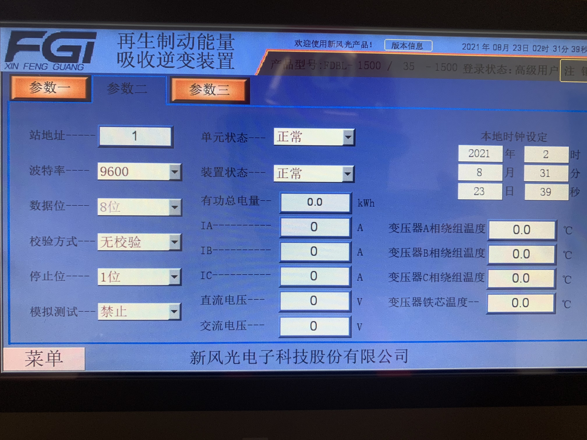
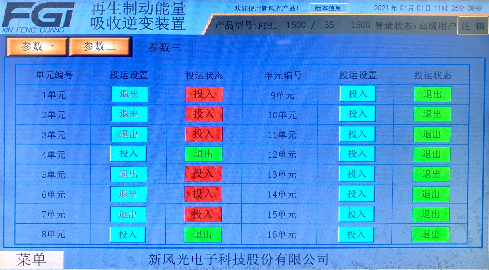

<!DOCTYPE html>
<html lang="en">
  <head>
    <meta charset="utf-8" />
    <meta name="viewport" content="width=device-width, initial-scale=1.0, maximum-scale=1.0, user-scalable=no" />

    <title></title>
    <link rel="stylesheet" href="dist/reveal.css" />
    <link rel="stylesheet" href="dist/theme/sky.css" id="theme" />
    <link rel="stylesheet" href="plugin/highlight/zenburn.css" />
	<link rel="stylesheet" href="css/layout.css" />
	<link rel="stylesheet" href="plugin/customcontrols/style.css">
	<link rel="stylesheet" href="plugin/chalkboard/style.css">


    <script defer src="dist/fontawesome/all.min.js"></script>

	<script type="text/javascript">
		var forgetPop = true;
		function onPopState(event) {
			if(forgetPop){
				forgetPop = false;
			} else {
				parent.postMessage(event.target.location.href, "app://obsidian.md");
			}
        }
		window.onpopstate = onPopState;
		window.onmessage = event => {
			if(event.data == "reload"){
				window.document.location.reload();
			}
			forgetPop = true;
		}

		function fitElements(){
			const itemsToFit = document.getElementsByClassName('fitText');
			for (const item in itemsToFit) {
				if (Object.hasOwnProperty.call(itemsToFit, item)) {
					var element = itemsToFit[item];
					fitElement(element,1, 1000);
					element.classList.remove('fitText');
				}
			}
		}

		function fitElement(element, start, end){

			let size = (end + start) / 2;
			element.style.fontSize = `${size}px`;

			if(Math.abs(start - end) < 1){
				while(element.scrollHeight > element.offsetHeight){
					size--;
					element.style.fontSize = `${size}px`;
				}
				return;
			}

			if(element.scrollHeight > element.offsetHeight){
				fitElement(element, start, size);
			} else {
				fitElement(element, size, end);
			}		
		}


		document.onreadystatechange = () => {
			fitElements();
			if (document.readyState === 'complete') {
				if (window.location.href.indexOf("?export") != -1){
					parent.postMessage(event.target.location.href, "app://obsidian.md");
				}
				if (window.location.href.indexOf("print-pdf") != -1){
					let stateCheck = setInterval(() => {
						clearInterval(stateCheck);
						window.print();
					}, 250);
				}
			}
	};


        </script>
  </head>
  <body>
    <div class="reveal">
      <div class="slides"><section  data-markdown><script type="text/template"># Obsidian  PPT
</script></section><section  data-markdown><script type="text/template">## Advanced Slides是什么？
- 基于[reveal JS](https://revealjs.com/)
- HTML
- CSS
- Javascript
- [官方文档](https://mszturc.github.io/obsidian-advanced-slides/)</script></section><section  data-markdown><script type="text/template">## 基本设置
- **端口**：相当于从本地localhost建立的可访问的网站。
	- 多个ob需设置不同端口避免冲突
- **导出**：HTML包。
- **<mark>主题</mark>**
	- 在插件设置中偶or在yaml中更改。
- **高亮主题**
- **切换效果**
- **切换速度**
- **插件**
	- 没错，这是一个可以装插件的插件
		- 黑板
		- 预览
		- 菜单
		- 进度条
		- 控制按钮
		- 自动补全（写CSS样式方便）
</script></section><section  data-markdown><script type="text/template">## 技巧
- 模块引用，大PPT嵌套小PPT
- 如何改变显示效果？
	- CSS前端知识
- <mark>嵌入一个文件夹中的所有文档，变成一个快速文件夹阅读器</mark>
	- 按path搜索并复制链接
	- 用正则表达式添加间隔---
- 高亮重点
- </script></section><section  data-markdown><script type="text/template">## 高亮指定行-静态
```[1,4]
唧唧复唧唧，木兰当户织。不闻机杼声，惟闻女叹息。
问女何所思，问女何所忆。女亦无所思，女亦无所忆。
昨夜见军帖，可汗大点兵，军书十二卷，卷卷有爷名。
阿爷无大儿，木兰无长兄，愿为市鞍马，从此替爷征。
```


### 多行

```[2-4]
唧唧复唧唧，木兰当户织。不闻机杼声，惟闻女叹息。
问女何所思，问女何所忆。女亦无所思，女亦无所忆。
昨夜见军帖，可汗大点兵，军书十二卷，卷卷有爷名。
阿爷无大儿，木兰无长兄，愿为市鞍马，从此替爷征。
```</script></section><section  data-markdown><script type="text/template">
## 高亮指定行-动态

```[1|4]
唧唧复唧唧，木兰当户织。不闻机杼声，惟闻女叹息。
问女何所思，问女何所忆。女亦无所思，女亦无所忆。
昨夜见军帖，可汗大点兵，军书十二卷，卷卷有爷名。
阿爷无大儿，木兰无长兄，愿为市鞍马，从此替爷征。
```

</script></section><section  data-markdown><script type="text/template">## 导出

- 导出方式：
	- print presentation，导出PDF效果与演示一致
	- export html导出html包。
- 导出页面大小设置：在yaml中添加：width:1000   height:1000
- 背景图
- 切换
- 动画
</script></section><section  data-markdown><script type="text/template">## Layout布局
- 如：文字三栏(style设置样式，gap设置间隔宽度)；
- 图片排布

<split even gap="1" style="text-align:left;">

第一栏

第二栏

第三栏

</split>
</script></section><section  data-markdown><script type="text/template">
<split even>

<p style="line-height: 0" class="reset-paragraph image-paragraph"></img></p>


<p style="line-height: 0" class="reset-paragraph image-paragraph"></img></p>


<p style="line-height: 0" class="reset-paragraph image-paragraph"></img></p>


</split>
</script></section><section  data-markdown><script type="text/template">
<div class="has-dark-background fragment reset-margin" style="background-color: red; position: absolute; left: 240px; top: 175px; height: 350px; min-height: 350px; width: 480px; display: flex; flex-direction: column; align-items: center; justify-content: space-evenly" data-fragment-index="1">

一
</div>

<div class="has-light-background fragment reset-margin" style="background-color: yellow; position: absolute; left: 384px; top: 280px; height: 140px; min-height: 140px; width: 192px; display: flex; flex-direction: column; align-items: center; justify-content: space-evenly" data-fragment-index="2">

二
</div>

<!-- .slide: class="drop" -->
</script></section><section  data-markdown><script type="text/template">## Templates模板复用 
<!-- .slide: data-auto-animate="true" -->

[Advanced Slides官网](https://mszturc.github.io/obsidian-advanced-slides/)`templates`

[reveal JS官网](https://revealjs.com/)的`config options`里 有很多牛逼的效果
</script></section><section  data-markdown><script type="text/template">## Templates模板复用<!-- .element: style="color: red" -->
<!-- .slide: data-auto-animate="true" -->

[Advanced Slides官网](https://mszturc.github.io/obsidian-advanced-slides/)`templates`

[reveal JS官网](https://revealjs.com/)的`config options`里 有很多牛逼的效果

- 举例：小过渡效果
- 不建议过多使用这些效果，会污染内容</script></section><section  data-markdown><script type="text/template">
## 类似Advanced Table
- layout
- header
- body
- footer
</script></section><section  data-markdown><script type="text/template">
Advanced Slides个性化演示举例


<!-- .slide: class="has-light-background" data-background-color="aquamarine" -->
## Slide with text based background
</script></section><section  data-markdown><script type="text/template">
# Slide without background
</script></section><section  data-markdown><script type="text/template">
<!-- .slide: data-background-image="https://picsum.photos/seed/picsum/800/600" -->
## Slide with image background
</script></section><section  data-markdown><script type="text/template">
<!-- .slide: data-background-image="0-附件素材/QDMETRO-pic.png" -->
## Slide with image background #2
</script></section><section  data-markdown><script type="text/template">
<!-- .slide: data-background-opacity="0.5" data-background-image="https://picsum.photos/seed/picsum/800/600" -->
## with opacity

0.5 ≙ 50% opacity
</script></section><section  data-markdown><script type="text/template">
## More options:

See [reveal backgrounds](https://revealjs.com/backgrounds/)

</script></section><section  data-markdown><script type="text/template">## 嵌入网页背景

<!-- .slide: data-background-iframe="http://slides.com" data-background-interactive="true" -->


note:
`note:`写笔记不显示在演示中
还可以在开头加上yaml以预加载网页

```
	---
	preloadiframes:true
	---
```

---</script></section></div>
    </div>

    <script src="dist/reveal.js"></script>

    <script src="plugin/markdown/markdown.js"></script>
    <script src="plugin/highlight/highlight.js"></script>
    <script src="plugin/zoom/zoom.js"></script>
    <script src="plugin/notes/notes.js"></script>
    <script src="plugin/math/math.js"></script>
	<script src="plugin/mermaid/mermaid.js"></script>
	<script src="plugin/chart/chart.min.js"></script>
	<script src="plugin/chart/plugin.js"></script>
	<script src="plugin/customcontrols/plugin.js"></script>
	<script src="plugin/chalkboard/plugin.js"></script>

    <script>
      function extend() {
        var target = {};
        for (var i = 0; i < arguments.length; i++) {
          var source = arguments[i];
          for (var key in source) {
            if (source.hasOwnProperty(key)) {
              target[key] = source[key];
            }
          }
        }
        return target;
      }

	  function isLight(color) {
		let hex = color.replace('#', '');

		// convert #fff => #ffffff
		if(hex.length == 3){
			hex = `${hex[0]}${hex[0]}${hex[1]}${hex[1]}${hex[2]}${hex[2]}`;
		}

		const c_r = parseInt(hex.substr(0, 2), 16);
		const c_g = parseInt(hex.substr(2, 2), 16);
		const c_b = parseInt(hex.substr(4, 2), 16);
		const brightness = ((c_r * 299) + (c_g * 587) + (c_b * 114)) / 1000;
		return brightness > 155;
	}

	var bgColor = getComputedStyle(document.documentElement).getPropertyValue('--r-background-color').trim();

	if(isLight(bgColor)){
		document.body.classList.add('has-light-background');
	} else {
		document.body.classList.add('has-dark-background');
	}

      // default options to init reveal.js
      var defaultOptions = {
        controls: true,
        progress: true,
        history: true,
        center: true,
        transition: 'default', // none/fade/slide/convex/concave/zoom
        plugins: [
          RevealMarkdown,
          RevealHighlight,
          RevealZoom,
          RevealNotes,
          RevealMath.MathJax3,
		  RevealMermaid,
		  RevealChart,
		  RevealCustomControls,
		  RevealChalkboard, 
        ],

		mathjax3: {
			mathjax: 'plugin/math/mathjax/tex-mml-chtml.js',
		},

		customcontrols: {
			controls: [
				{ icon: '<i class="fa fa-pen-square"></i>',
				title: 'Toggle chalkboard (B)',
				action: 'RevealChalkboard.toggleChalkboard();'
				},
				{ icon: '<i class="fa fa-pen"></i>',
				title: 'Toggle notes canvas (C)',
				action: 'RevealChalkboard.toggleNotesCanvas();'
				},
			]
		},
      };

      // options from URL query string
      var queryOptions = Reveal().getQueryHash() || {};

      var options = extend(defaultOptions, {"width":960,"height":700,"margin":0.04,"controls":true,"progress":true,"slideNumber":false,"transition":"slide","transitionSpeed":"default"}, queryOptions);
    </script>

    <script>
      Reveal.initialize(options);
    </script>
  </body>
</html>
